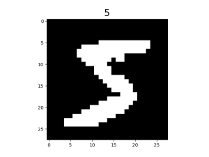

Loading Image Dataset
Linux Ascend GPU CPU Data Preparation Beginner Intermediate Expert

Overview
In computer vision training tasks, it is often difficult to read the entire dataset directly into memory due to memory capacity. The mindspore.dataset module provided by MindSpore enables users to customize their data fetching strategy from disk. At the same time, data processing and data augmentation operators are applied to the data. Pipelined data processing produces a continuous flow of data to the training network, improving overall performance.
In addition, MindSpore supports data loading in distributed scenarios. Users can define the number of shards while loading. For more details, see Loading the Dataset in Data Parallel Mode.
This tutorial uses the MNIST dataset [1] as an example to demonstrate how to load and process image data using MindSpore.
Preparations
Loading Dataset
MindSpore supports loading common datasets in the field of image processing that come in a variety of on-disk formats. Users can also implement custom dataset class to load customized data.
The following tutorial shows how to load the MNIST dataset using the MnistDataset in the mindspore.dataset module.
Configure the dataset directory and create the
MnistDataset.DATA_DIR = "./MNIST" mnist_dataset = ds.MnistDataset(DATA_DIR, num_samples=6, shuffle=False)
Create an iterator then obtain data through the iterator.
import matplotlib.pyplot as plt mnist_it = mnist_dataset.create_dict_iterator() data = next(mnist_it) plt.imshow(data['image'].asnumpy().squeeze(), cmap=plt.cm.gray) plt.title(data['label'].asnumpy(), fontsize=20) plt.show()
The image is shown below:

In addition, users can pass in a sampler to specify the sampling process during dataset loading.
Processing Data
The following tutorial demonstrates how to construct a pipeline and perform operations such as shuffle, batch and repeat on the MNIST dataset.
for data in mnist_dataset.create_dict_iterator():
print(data['label'])
The output is as follows:
5
0
4
1
9
2
Shuffle the dataset.
ds.config.set_seed(58) ds1 = mnist_dataset.shuffle(buffer_size=6) for data in ds1.create_dict_iterator(): print(data['label'])
The output is as follows:
4 2 1 0 5 9
Add
batchaftershuffle.ds2 = ds1.batch(batch_size=2) for data in ds2.create_dict_iterator(): print(data['label'])
The output is as follows:
[4 2] [1 0] [5 9]
Add
repeatafterbatch.ds3 = ds2.repeat(count=2) for data in ds3.create_dict_iterator(): print(data['label'])
The output is as follows:
[4 2] [1 0] [5 9] [2 4] [0 9] [1 5]
The results show the dataset is repeated, and the order of the replica is different from that of the first copy.
Having
repeatin the pipeline results in the execution of repeated operations defined in the entire pipeline, instead of simply copying the current dataset. So the order of the replica is different from that of the first copy aftershuffle.
Augmentation
The following tutorial demonstrates how to use the c_transforms module to augment data in the MNIST dataset.
Import related modules and load the dataset.
from mindspore.dataset.vision import Inter import mindspore.dataset.vision.c_transforms as transforms mnist_dataset = ds.MnistDataset(DATA_DIR, num_samples=6, shuffle=False)
Define augmentation operators and perform the
ResizeandRandomCropoperations on images in the dataset.resize_op = transforms.Resize(size=(200,200), interpolation=Inter.LINEAR) crop_op = transforms.RandomCrop(150) transforms_list = [resize_op, crop_op] ds4 = mnist_dataset.map(operations=transforms_list, input_columns="image")
Visualize the result of augmentation.
mnist_it = ds4.create_dict_iterator() data = next(mnist_it) plt.imshow(data['image'].asnumpy().squeeze(), cmap=plt.cm.gray) plt.title(data['label'].asnumpy(), fontsize=20) plt.show()
The original image is scaled up then randomly cropped to 150 x 150.

References
[1] Y. LeCun, L. Bottou, Y. Bengio, and P. Haffner. Gradient-based learning applied to document recognition.